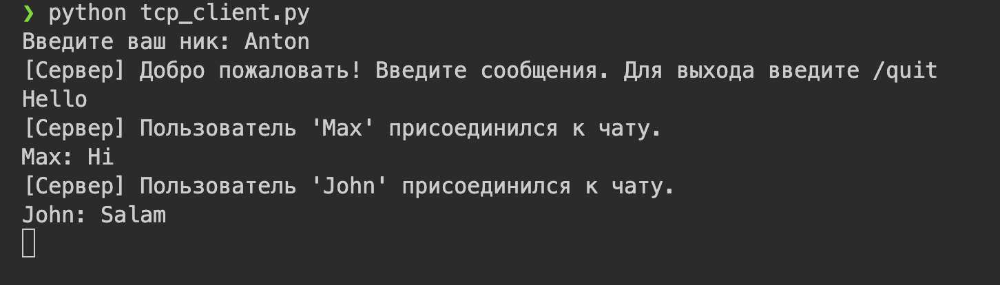

Задание 4: Многопользовательский чат на TCP¶
Условие¶
Реализовать многопользовательский чат.
Требования:
- Обязательно использовать библиотеку
socket. - Для многопользовательского чата необходимо использовать библиотеку
threading.
Реализация:
- Протокол TCP: 100% баллов.
- Протокол UDP: 80% баллов.
- Для UDP используйте threading для получения сообщений на клиенте.
- Для TCP запустите клиентские подключения и обработку сообщений от всех пользователей в потоках. Не забудьте сохранять пользователей, чтобы отправлять им сообщения.
Принцип работы¶
-
Сервер:
-
запускается и слушает входящие подключения;
- при подключении нового клиента — создаёт поток для его обработки;
- хранит список всех подключённых клиентов;
-
пересылает каждое полученное сообщение всем остальным клиентам.
-
Клиент:
-
подключается к серверу;
- в одном потоке — отправляет сообщения;
-
в другом потоке — принимает сообщения от сервера и отображает их.
-
Работа в реальном времени достигается за счёт потоков, обрабатывающих ввод и вывод параллельно.
Код программы¶
Сервер (tcp_server.py)¶
import socket
import threading
HOST = "0.0.0.0"
PORT = 12345
clients = {}
clients_lock = threading.Lock()
def broadcast(message: str, exclude_sock=None):
"""Отправить message всем клиентам (кроме exclude_sock)."""
with clients_lock:
for sock in list(clients.keys()):
if sock is exclude_sock:
continue
try:
sock.sendall(message.encode("utf-8"))
except Exception:
remove_client(sock)
def remove_client(sock):
with clients_lock:
nick = clients.pop(sock, None)
try:
sock.close()
except Exception:
pass
if nick:
broadcast(f"[Сервер] Пользователь '{nick}' покинул чат.\n")
def handle_client(conn: socket.socket, addr):
try:
conn.sendall("Введите ваш ник: ".encode("utf-8"))
nick = conn.recv(1024).decode("utf-8").strip()
if not nick:
conn.sendall("Неправильный ник, соединение закрывается.\n".encode("utf-8"))
conn.close()
return
with clients_lock:
clients[conn] = nick
print(f"[+] {addr} -> {nick} присоединился")
broadcast(
f"[Сервер] Пользователь '{nick}' присоединился к чату.\n", exclude_sock=conn
)
conn.sendall(
"[Сервер] Добро пожаловать! Введите сообщения. Для выхода введите /quit\n".encode(
"utf-8"
)
)
while True:
data = conn.recv(4096)
if not data:
break
text = data.decode("utf-8").rstrip("\n")
if text == "/quit":
break
message = f"{nick}: {text}\n"
print(message.strip())
broadcast(message, exclude_sock=conn)
except ConnectionResetError:
pass
except Exception as e:
print("Ошибка в обработчике клиента:", e)
finally:
remove_client(conn)
print(f"[-] {addr} отключился")
def accept_loop(server_sock: socket.socket):
while True:
conn, addr = server_sock.accept()
thread = threading.Thread(target=handle_client, args=(conn, addr), daemon=True)
thread.start()
if __name__ == "__main__":
with socket.socket(socket.AF_INET, socket.SOCK_STREAM) as server_sock:
server_sock.setsockopt(socket.SOL_SOCKET, socket.SO_REUSEADDR, 1)
server_sock.bind((HOST, PORT))
server_sock.listen()
print(f"Сервер чата запущен на {HOST}:{PORT}")
try:
accept_loop(server_sock)
except KeyboardInterrupt:
print("\nСервер остановлен вручную.")
Клиент (tcp_client.py)¶
import socket
import threading
import sys
HOST = "127.0.0.1"
PORT = 12345
def receive_loop(sock: socket.socket):
try:
while True:
data = sock.recv(4096)
if not data:
print("Соединение с сервером разорвано.")
break
print(data.decode("utf-8"), end="")
except Exception:
pass
finally:
try:
sock.close()
except Exception:
pass
sys.exit(0)
if __name__ == "__main__":
with socket.socket(socket.AF_INET, socket.SOCK_STREAM) as sock:
try:
sock.connect((HOST, PORT))
except Exception as e:
print("Не удалось подключиться:", e)
sys.exit(1)
initial = sock.recv(1024).decode("utf-8")
print(initial, end="")
nick = input().strip()
sock.sendall((nick + "\n").encode("utf-8"))
recv_thread = threading.Thread(target=receive_loop, args=(sock,), daemon=True)
recv_thread.start()
try:
while True:
msg = input()
if msg.strip() == "/quit":
sock.sendall("/quit\n".encode("utf-8"))
break
try:
sock.sendall((msg + "\n").encode("utf-8"))
except Exception:
print("Ошибка отправки — соединение потеряно.")
break
except KeyboardInterrupt:
sock.sendall("/quit\n".encode("utf-8"))
finally:
try:
sock.close()
except Exception:
pass
print("Вы вышли из чата.")
sys.exit(0)
Запуск¶
- Необходимо открыть два терминала.
- В первом запустить сервер:
python tcp_server.py - В других трёх терминалах запустить клиент:
python tcp_client.py - Для каждого клиента введите имя.
- Можно набирать сообщения.
Результат¶
Запустив сервер, видим: 
Запускаем трёх клиентов. Набираем сообщения.
Терминал первого клиента: 
Терминал второго клиента:

Терминал третьего клиента:

Сообщения пользователя отображаются в терминалах других клиентов, но не в его.
Выводы¶
- Реализован многопользовательский чат с использованием
socket,threadingи TCP. - Сервер поддерживает несколько одновременных подключений, обрабатывая каждого клиента в отдельном потоке.
- Сообщения корректно доставляются между всеми клиентами в реальном времени.